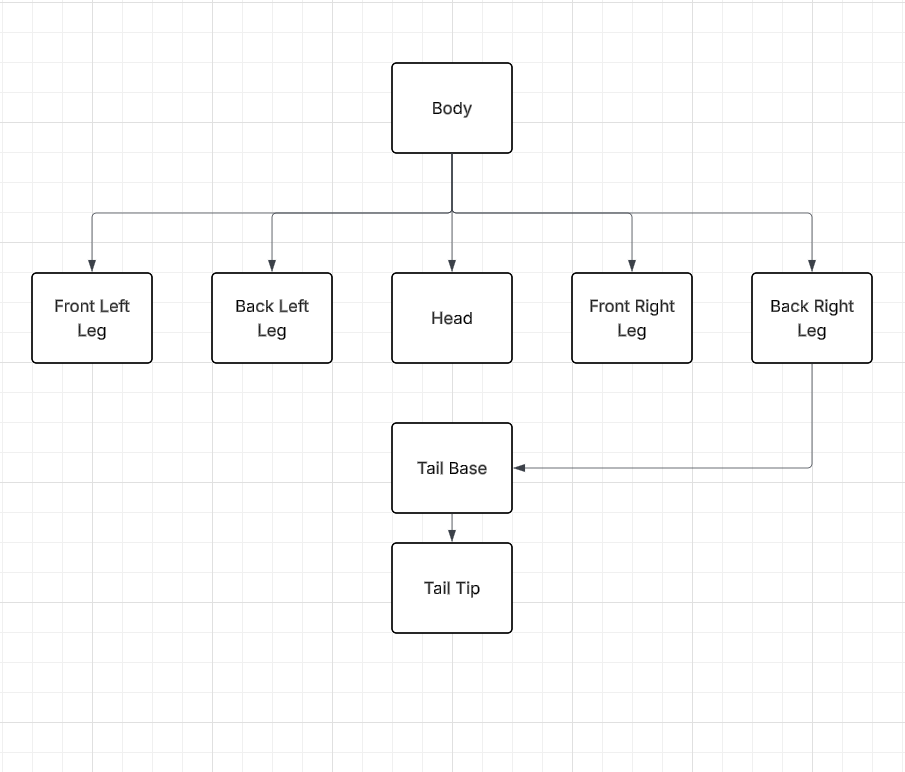

Author: Chester Urbati
Date: April 24, 2026
Description:
This project shows my hierarchical model. I used phong vertex shading for lighting and used the y=x^3 function to create the texture seen on all the objects.
The figure is following a paramterized circle and then gets the tangent from the y vector and current position of the figure. That is then used to get the angle so the model following the path.
Resources:
https://stackoverflow.com/questions/37422885/how-to-rotate-an-object-along-a-circular-path
https://developer.mozilla.org/en-US/docs/Web/API/KeyboardEvent
https://stackoverflow.com/questions/34842502/processing-how-do-i-make-an-object-move-in-a-circular-path
Class notes, Demos, and Textbooks
You can change matierals by using the drop down menu. You can start and stop the animation by using the button. Mouse controls are like normal expect I rebound the zoom. to zoom in and out you need to use the "+" and "-" on the keyboard.
Models Tree Break Down:
